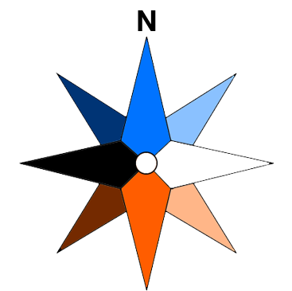

<!DOCTYPE html>
<meta charset="UTF-8">
<meta http-equiv="cache-control" content="max-age=300" />
<style type="text/css">
  html,
  body {
    margin: 0;
  }

  /* Définition du style pour l'élément avec l'identifiant 'viewerDiv' */
  #viewerDiv {
    width: 100%;
    /* Largeur à 100% */
    height: 100vh;
    /* Hauteur à 600 pixels */
  }

  .legend {
    display: flex;
    flex-direction: column;
    background-color: rgba(255, 255, 255, 0.8);
    padding: 6px 8px;
    font-size: 12px;
    border-radius: 5px;
    bottom: 3vh;
    gap: 1px;
    max-width: 85%;
  }

  .legend h2 {
    font-size: 20px;
    margin: 0;
  }

  .legend h3 {
    font-size: 14px;
    margin: 0;
  }

  .legend h4 {
    font-size: 13px;
    margin: 0;
  }

  .legend i {
    width: 18px;
    height: 18px;
    float: left;
    margin: 0 8px;
    opacity: 0.7;
  }

  .legend p {
    margin: 2px 0;
  }

  .legend i.degrade {
    width: 95%;
    height: 18px;
    margin: 0 0 0 8px;
    opacity: 0.7;
  }

  .legend i.pentes_degrade {
    height: 80%;
    width: 18px;
    margin: 10px 0 0 8px;
    opacity: 0.7;
  }

  .legend span.degradedroite {
    position: relative;
    float: right;
  }

  .pentes {
    display: flex;
    justify-content: space-between;
  }

  .pentes_bloc {
    display: flex;
    flex-direction: column;
    align-items: center;
  }

  .pentes_valeurs {
    display: flex;
    height: 100%;
  }

  .pentes_groupe_valeurs {
    display: flex;
    flex-direction: column-reverse;
    justify-content: space-between;
    align-items: end;
  }

  .btn-open,
  .btn-close {
    background-color: #fff;
    border: 1px solid #ccc;
    color: #333;
    padding: 2px 12px;
    cursor: pointer;
    float: right;
    font-size: 12px;
    border-radius: 5px;
  }

  .btn-open:hover,
  .btn-close:hover {
    background-color: #f7f7f7;
  }

  .hidden {
    display: none;
  }


  .leaflet-popup-content {
    min-width: 450px;
    min-height: 450px;
  }

  img {
    width: 100px;
  }
</style>

<!-- Importation de la feuille de style pour Leaflet, une bibliothèque pour la cartographie -->
<link rel="stylesheet" href="https://unpkg.com/leaflet@1.0.3/dist/leaflet.css" />

<!-- Importation de la bibliothèque Leaflet -->
<script src="https://unpkg.com/leaflet@1.0.3/dist/leaflet.js"></script>

<!-- Importation de la bibliothèque jQuery -->
<script src="https://code.jquery.com/jquery-3.6.0.min.js"></script>

<!-- Définition d'un élément div pour la carte -->
<div id="viewerDiv"></div>

<script type="text/javascript">
  /* Lorsque la fenêtre est entièrement chargée */
  window.onload = function () {
    /* Initialisation de la carte avec Leaflet dans l'élément div avec id 'viewerDiv',
        avec une vue centrée sur les coordonnées et le zoom donnés */
    var map = L.map("viewerDiv").setView(
      [45.17384615384615, 5.71],
      10
    );

    /* Création d'un groupe de couches contenant les couches de risque d'avalanche */
    var imageOverlays = L.layerGroup();

    /* Création d'un groupe de couches contenant les couches de neige totale */
    var imageNeigeOverlays = L.layerGroup();

    /* Création d'un groupe de couches contenant les couches de neige fraiche */
    var imageNeigeFraicheOverlays = L.layerGroup();

    /* Création d'un groupe de couches contenant les couches de neige fraiche (prévisions) */
    var imageNeigeFraichePrevisionOverlays = L.layerGroup();

    /* Création d'un groupe de couches contenant les couches d'altitudes */
    var imageAltitudeOverlays = L.layerGroup();

    /* Création d'un groupe de couches contenant les couches de pentes */
    var imagePenteOverlays = L.layerGroup();

    /* Création d'un groupe de couches contenant les couches d'orientations */
    var imageOrientationOverlays = L.layerGroup();

    /* Stockage des cartes déjà affichées */
    var carte = [];

    /* Création d'un élément canvas pour dessiner une image */
    var canvas = document.createElement("canvas");

    var urlBack = "http://localhost/Skitour/";

    /* Déclaration  point d'information */
    var iconeInformation = L.icon({
      iconUrl: urlBack + "assets/information.png",
      iconSize: [20, 20],
      iconAnchor: [20, 20],
    });


    var urlCadreAlpes = urlBack + "api/geojson/cadrealpes.json";
    var urlCadreCorse = urlBack + "api/geojson/cadrecorse.json";
    var urlCadrePyrenees = urlBack + "api/geojson/cadrepyrenees.json";


    /* Affichage de l'image à l'endroit correspondant */
    function getImage(numMassif) {
      var url = urlBack + `api/images/risque/${numMassif}.png`;
      var urlNeige = urlBack + `api/images/neigetotale/${numMassif}.png`;
      var urlNeigeFraiche = urlBack + `api/images/neigefraiche/${numMassif}.png`;
      var urlBounds = urlBack + "api/geojson/cadremassif.json";
      var urlCentreMassif = urlBack + "api/geojson/centre_massif.json";
      var urlNeigeFraichePrevision = urlBack + `api/images/neigefraicheprevision/${numMassif}.png`;
      var urlAltitude = urlBack + `api/images/altitude/${numMassif}.png`;
      var urlPente = urlBack + `api/images/pente/${numMassif}.png`;
      var urlOrientation = urlBack + `api/images/orientation/${numMassif}.png`;

      /* Ajout de l'image créée sur le canvas en tant qu'overlay sur la carte */
      $.getJSON(urlBounds, function (data) {
        $.getJSON(urlCentreMassif, function (centre) {
          /* Récupération du point au centre du massif */
          var pointMilieu = [centre[numMassif][1], centre[numMassif][0]];

          canvas.width = data["width"]; /* Largeur */
          canvas.height = data["height"]; /* Hauteur */
          var ctx =
            canvas.getContext(
              "2d"
            ); /* Récupération du contexte de dessin pour le canvas */
          data.forEach((elem) => {
            if (elem["id"] === numMassif) {
              var bg = elem["cadre"]["bg"];
              var hd = elem["cadre"]["hd"];

              /* Création d'un calque d'image du risque d'avalanche sur la carte */
              var imageOverlay = L.imageOverlay(url, L.latLngBounds([bg, hd]), {
                opacity: 0.9,
              }).addTo(imageOverlays);

              /* Création d'un calque d'image de l'apaisseur de neige totale sur la carte */
              var imageNeigeOverlay = L.imageOverlay(urlNeige, L.latLngBounds([bg, hd]), {
                opacity: 0.7,
              }).addTo(imageNeigeOverlays);

              /* Création d'un calque d'image de l'apaisseur de neige fraiche sur la carte */
              var imageNeigeFraicheOverlay = L.imageOverlay(urlNeigeFraiche, L.latLngBounds([bg, hd]), {
                opacity: 0.7,
              }).addTo(imageNeigeFraicheOverlays);

              /* Création d'un calque d'image de l'apaisseur de neige fraiche (prévisions) sur la carte */
              var imageNeigeFraichePrevisionOverlay = L.imageOverlay(urlNeigeFraichePrevision, L.latLngBounds([bg, hd]), {
                opacity: 0.7,
              }).addTo(imageNeigeFraichePrevisionOverlays);

              /* Création d'un calque d'image de l'altitude sur la carte */
              var imageAltitudeOverlay = L.imageOverlay(urlAltitude, L.latLngBounds([bg, hd]), {
                opacity: 0.7,
              }).addTo(imageAltitudeOverlays);

              /* Création d'un calque d'image de la pente sur la carte */
              var imagePenteOverlay = L.imageOverlay(urlPente, L.latLngBounds([bg, hd]), {
                opacity: 0.7,
              }).addTo(imagePenteOverlays);

              /* Création d'un calque d'image de l'orientation sur la carte */
              var imageOrientationOverlay = L.imageOverlay(urlOrientation, L.latLngBounds([bg, hd]), {
                opacity: 0.7,
              }).addTo(imageOrientationOverlays);

              /* Point d'information */
              var marker = L.marker(pointMilieu, { icon: iconeInformation }).addTo(map);

              /* Pop up BRA */
              var popupContent = `<iframe src="https://api.meteofrance.com/files/mountain/bulletins/BRA${numMassif}.xml" width="450px" height="450px"></iframe>`;
              var popup = L.popup()
                .setContent(popupContent);

              marker.bindPopup(popup);

              return;
            }
          });

        })
      });
    }


    /* Recupère les rectangles autour des massifs depuis un fichier .json */
    let alpes;
    let P1 = $.getJSON(urlCadreAlpes, function (data) {

      alpes = new Map(data.map((e) => [e.id, e.cadre]));
    })

    /* Recupère les rectangles autour des massifs depuis un fichier .json */
    let corse;
    let P2 = $.getJSON(urlCadreCorse, function (data) {

      corse = new Map(data.map((e) => [e.id, e.cadre]));
    })

    /* Recupère les rectangles autour des massifs depuis un fichier .json */
    let pyrenees;
    let P3 = $.getJSON(urlCadrePyrenees, function (data) {

      pyrenees = new Map(data.map((e) => [e.id, e.cadre]));
    })

    Promise.all([P1, P2, P3]).then((o) => {

      /* Affichage des images concernées lors de la première génération de l'image */
      var grille = MassifAfficher();
      grille.forEach(e => getImage(e));
    })


    /* Fonction permettant de savoir si un point est dans un rectangle ou non */
    function dansRect(P, bg, bd, hg, hd) {
      return bg[0] <= P[0] && hg[0] >= P[0] && P[1] >= bg[1] && P[1] <= bd[1]
    }


    /* Fonction permettant de vérifier si un rectangle entourant un massif est affiché a l'écran */
    function dansMassif(value, key, ma, massif) {

      var SWma = value.bg;
      var NEma = value.hd;
      var NWma = value.hg;
      var SEma = value.bd;

      var NE = [map.getBounds().getNorthEast().lat, map.getBounds().getNorthEast().lng];
      var NW = [map.getBounds().getNorthWest().lat, map.getBounds().getNorthWest().lng];
      var SE = [map.getBounds().getSouthEast().lat, map.getBounds().getSouthEast().lng];
      var SW = [map.getBounds().getSouthWest().lat, map.getBounds().getSouthWest().lng];

      if (
        dansRect(SWma, SW, SE, NW, NE) ||
        dansRect(NEma, SW, SE, NW, NE) ||
        dansRect(NWma, SW, SE, NW, NE) ||
        dansRect(SEma, SW, SE, NW, NE) ||
        dansRect(SW, SWma, SEma, NWma, NEma) ||
        dansRect(NE, SWma, SEma, NWma, NEma) ||
        dansRect(NW, SWma, SEma, NWma, NEma) ||
        dansRect(SE, SWma, SEma, NWma, NEma)
      ) {
        ma.push(key);
        massif.delete(key);
      }
    }

    /* Fonction permettant de déterminer quels massifs sont affichés à l'écran */
    function MassifAfficher() {
      var ma = [];
      var massif;
      var center = map.getCenter();

      if (center.lat >= 43.85 && center.lng >= 5.18 && center.lat <= 46.41 && center.lng <= 7.78) {
        massif = alpes;
      } else if (center.lat >= 41.6 && center.lng >= 8.7 && center.lat <= 42.6 && center.lng <= 9.64) {
        massif = corse;
      } else if (center.lat >= 42.29 && center.lng >= -1.34 && center.lat <= 43.19 && center.lng <= 2.77) {
        massif = pyrenees;
      }

      if (massif) {
        for (const [key, value] of massif) {
          dansMassif(value, key, ma, massif);
        }
      }

      return ma;
    }

    /* Gestion des évents de drag */
    map.on("dragend", function (e) {

      if (map.getZoom() >= 3) {
        var grille = MassifAfficher();
        grille.forEach((e) => getImage(e));
      }
    });

    /* Évent affichant la carte a la fin d'un zoom/dézoom */
    map.on("zoomend", function (e) {

      if (map.getZoom() >= 3) {
        var grille = MassifAfficher();
        grille.forEach((e) => getImage(e));
      }
    });

    /* Ajout de la couche de tuiles pour la carte via une URL de service de tuiles */
    var ign = L.tileLayer(
      "https://wxs.ign.fr/decouverte/geoportail/wmts?service=WMTS&request=GetTile&version=1.0.0&tilematrixset=PM&tilematrix={z}&tilecol={x}&tilerow={y}&layer=ORTHOIMAGERY.ORTHOPHOTOS&format=image/jpeg&style=normal",
      {
        minZoom: 0 /* Niveau de zoom minimum */,
        maxZoom: 18 /* Niveau de zoom maximum */,
        tileSize: 256 /* Taille des tuiles */,
        attribution:
          "IGN-F/Géoportail" /* Crédit à afficher pour les données */,
      }
    );

    /* Définition de la couche de tuiles OpenStreetMap */
    var osm = L.tileLayer("https://tile.openstreetmap.org/{z}/{x}/{y}.png", {
      maxZoom: 19,
      attribution: "© OpenStreetMap",
    });

    /* Définition de la couche de tuiles OpenTopo */
    var opentopo = L.tileLayer('https://{s}.tile.opentopomap.org/{z}/{x}/{y}.png', {
      attribution: `Kartendaten: © OpenStreetMap-Mitwirkende, SRTM 
                                  | Kartendarstellung: © OpenTopoMap (CC-BY-SA)`
    });

    /* Définition de la couche de tuiles ESRI */
    var Esri_WorldStreetMap = L.tileLayer('https://server.arcgisonline.com/ArcGIS/rest/services/World_Street_Map/MapServer/tile/{z}/{y}/{x}', {
      attribution: 'Tiles &copy; Esri &mdash; Source: Esri, DeLorme, NAVTEQ, USGS, Intermap, iPC, NRCAN, Esri Japan, METI, Esri China (Hong Kong), Esri (Thailand), TomTom, 2012'
    });

    /* Ajout des couches affichées initialement*/
    Esri_WorldStreetMap.addTo(map);
    imageOverlays.addTo(map);

    /* Définition des couches de base de la carte */
    var baseMaps = {
      OpenStreetMap: osm,
      "IGN découverte": ign,
      "OpenTopo": opentopo,
      "ESRI": Esri_WorldStreetMap
    };

    /* Définition des couches supérieures de la carte */
    var overlayMaps = {
      "Risque d'avalanche": imageOverlays,
      "Epaisseur de neige": imageNeigeOverlays,
      "Neige fraiche": imageNeigeFraicheOverlays,
      "Neige fraiche (prévisions)": imageNeigeFraichePrevisionOverlays,
      "Topographie": imageAltitudeOverlays,
      "Pentes": imagePenteOverlays,
      "Orientations": imageOrientationOverlays
    };

    /* Ajout du contrôle de couche à la carte */
    var layerControl = L.control.layers(baseMaps, overlayMaps).addTo(map);

    /* Récupération de la couleur associée à chaque risque */
    function getColor(category) {
      switch (category) {
        case "1-Faible":
          return "#2CB051";
        case "2-Limité":
          return "#FEF035";
        case "3-Marqué":
          return "#FD7F36";
        case "4-Fort":
          return "#EC0B18";
        case "5-Très fort":
          return "#83070C";
        default:
          return "#000000";
      }
    }

    /* Création de la légende */
    const legend = L.control({ position: "bottomleft" });

    legend.onAdd = function (map) {
      const div = L.DomUtil.create("div", "legend");
      const labels = [];
      const categories = ["1-Faible", "2-Limité", "3-Marqué", "4-Fort", "5-Très fort"];

      for (let i = 0; i < categories.length; i++) {
        labels.push('<div class = "inside"><i style="background:' + getColor(categories[i]) + '"></i> ' + categories[i] + '</div>');
      }

      div.innerHTML += '<button class="btn-open hidden">Ouvrir la légende</button>';
      div.innerHTML += '<button class="btn-close">Fermer la légende</button>';
      div.innerHTML += "<h2 class='inside'>Légende</h2>";
      div.innerHTML += "<h3 class='inside'>Pentes</h3>";
      div.innerHTML += "<div class='pentes inside'><div class='pentes_bloc'><h4>Orientation</h4></div><div class='pentes_bloc'><h4>Degré</h4><div class='pentes_valeurs'><div class='pentes_groupe_valeurs'><span>30°</span><span>35°</span><span>40°</span><span>45°</span><span>50°</span></div><i class='pentes_degrade inside' style='background: linear-gradient(to top, #FFFF00, #FF8000, #FF0000, #FF00FF, #000000)'></i></div></div><div class='pentes_bloc'><h4>Altitude</h4><div class='pentes_valeurs'><div class='pentes_groupe_valeurs'><span>0m</span><span>2400m</span><span>4800m</span></div><i class='pentes_degrade inside' style='background: linear-gradient(to top, rgba(0,0,0,0), #0000FF, #00FFFF, #00FF00, #FFFF00, #FF0000, #000000)'></i></div></div></div>";
      div.innerHTML += "<h4 class='inside'>Risque d'avalanche</h4>";
      div.innerHTML += labels.join("");
      div.innerHTML += '<p class="inside">Pentes les plus opaques : pentes les plus dangereuses</p>';
      div.innerHTML += "<h4 class='inside'>Épaisseur de neige (en cm)</h4>";
      div.innerHTML += '<i class="degrade inside" style="background: linear-gradient(to right, rgba(132, 214, 249), rgba(0, 48, 67));"></i><br>';
      div.innerHTML += '<div class="inside deg"><span>1</span><span class="degradedroite">200</span></div>';
      div.innerHTML += "<h4 class='inside'>Neige fraîche cumulée sur les 4 derniers jours (en cm)</h4>";
      div.innerHTML += '<i class="degrade inside" style="background: linear-gradient(to right, rgba(132, 214, 249), rgba(0, 48, 67));"></i><br>';
      div.innerHTML += '<div class="inside deg"><span>1</span><span class="degradedroite">100</span></div>';
      div.innerHTML += '<div class = "inside"><i style="background-image: url(assets/pluieLegende.png); background-size: 300%;"></i>Pluie</div>'

      const insideContent = div.querySelectorAll(".inside");

      /* Ajoute un écouteur d'événements sur le bouton d'ouverture */
      const openButton = div.querySelector(".btn-open");
      openButton.addEventListener("click", showLegend);

      /* Ajoute un écouteur d'événements sur le bouton de fermeture */
      const closeButton = div.querySelector(".btn-close");
      closeButton.addEventListener("click", hideLegend);

      /* Fonction pour afficher la légende */
      function showLegend() {
        openButton.classList.add("hidden");
        closeButton.classList.remove("hidden");
        insideContent.forEach((item) =>
          item.classList.remove("hidden")
        );
      }

      /* Fonction pour masquer la légende */
      function hideLegend() {
        openButton.classList.remove("hidden");
        closeButton.classList.add("hidden");
        insideContent.forEach((item) =>
          item.classList.add("hidden")
        );
      }

      return div;
    };

    /* Ajout de la légende à la carte */
    legend.addTo(map);

  };
</script>